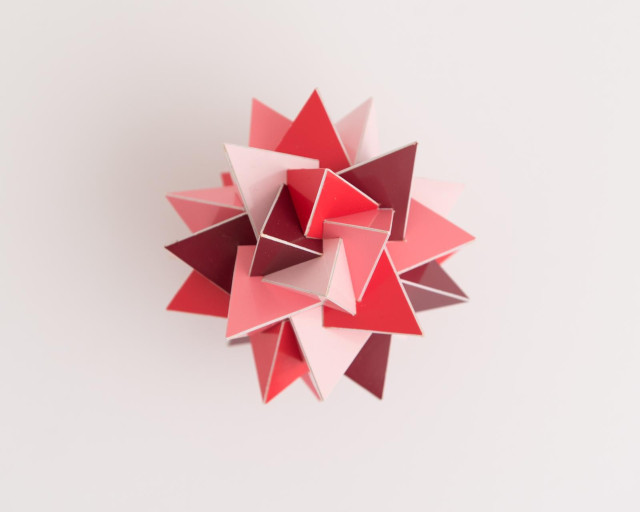
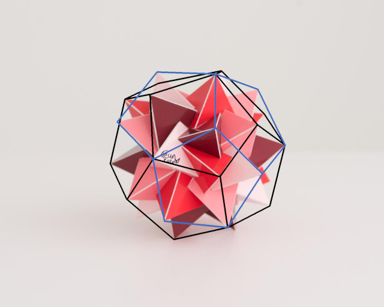

Compound of Eight Tetrahedra

This is a compound of 8 tetrahedra that has all the rotational symmetries of a cube where the 3-fold axis of the cube is shared with a pair of opposite tetrahedra. One can vary the angle of rotation around the 3-fold axes and therefore many of such compounds exist. This is however a special angle (μ3) but when I decided to build this model I didn't know that yet. I was just attracted by it. One of the reasons was that it was hard to recognise the tetrahedron vertices that are the ones that are shared with the 3-fold axes. There are other vertices that are easily confused with them.
Then I discovered that this compound is special since all the tetrahedron vertices not sharing a 3-fold axis with the final compound do share a 3-fold axis with another tetrahedron, which isn't the case for any other compounds with this symmetry. The colours of the constructed model pair up the tetrahedra that share a 3-fold axis with the compound. If you choose "alternative colouring" then it shows how other tetrahedron vertices share 3-fold axes that aren't 3-fold symmetry axes in the compound.
After I had posted the finished model on Instagram Piotr Pawlikowski contacted me to ask me more about this compound. I gave him the link to the OFF-file and he was amazed to see that the list of vertex coordinates was stuffed with the golden ratio! They are all permutations of [±1, ±1, ±1] and [0, ±φ, ±1/φ], where φ is the number of the golden ratio. This was truly a big surprise to me as well: you would expect the number 5 to pop up somewhere, but this was 8 tetrahedra and no 5-fold symmetry axis.
Before I could respond he came back to me telling me that the vertices of this compound are the same vertices as the vertices of the compound of two dodecahedra! And indeed one can easily recognise the pentagons in this model, see the black and blue lines in the picture below or check out this link

Another way of seeing this compound is that this is a compound of two compounds of 4 tetrahedra, where the compound of 4 tetrahedra is a classical compound of 5 tetrahedra with one tetrahedron removed and has the rotational symmetries of a tetrahedron.Later Piotr noticed that the angle μ3 is exactly the (smallest) angle between two cubes in the classical compound of five cubes. Once knowing the relationship with a dodecahedron, it can be reasoned, i.e. without calculating the actualy angle, that this must be the case. Still it is wonderful that once the golden ratio pops up, everything turns to gold!
Note, the off file that is shown on this page is a bit rotated to the adjust to the same perspective as the picture of the real model, which isn't exactly looking straight into the 4-fold axis. That means that it won't show the golden ratio as it did for Piotr. The generated off-file I sent him can be found here
The pictures are copyrighted by PhotoArt Studio Hörby
Links
- Thumbnails
- Page with interactive models of compounds of Tetrahedra
- Teun's Polyhedra
- Home
Last Updated
2021-01-11